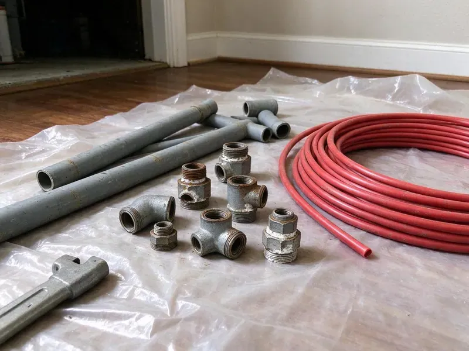

Water Line Replacement in Memphis, TN
Don't let a broken water line damage your property in Memphis, TN. BGV Plumbing offers professional water line replacement services for long-term peace of mind.
- Expert Tennessee Plumbers
- Licensed Plumbers
- PEX and Type K Copper
- New Main Shutoff Valves

Reliable Water Line Replacement Services in Memphis, TN.
Don't let a damaged water line interrupt your daily life. Contact BGV Plumbing for fast and professional service.
Your Local Choice for Water Line Replacement in Memphis, TN
At BGV Plumbing, we specialize in diagnosing and replacing compromised main water lines in Memphis, TN. Our experienced plumbers use advanced techniques and high-quality materials to ensure your new water line is strong and code-compliant.
Our expertise includes:
- Copper, PEX, and PVC water line installation
- Galvanized and polybutylene main line replacement with PEX or copper
- Pressure reducing valve and main shutoff installation at the house

Additional Plumbing Replacement Services in Memphis, TN
When repairs are no longer enough, our replacement services in Memphis, TN deliver durable upgrades that restore full performance.


Customers
Why Choose BGV Plumbing for Water Line Replacement in Memphis, TN?
Housing in Tennessee ranges from older homes with cast iron drains and galvanized supply lines to newer builds plumbed with PEX. Many older homes still have galvanized steel service lines that corrode from the inside, cutting pressure and eventually leaking. Rocky soil and shifting ground add stress to buried pipe.
- Confirmed Leaks, We pinpoint leaks with acoustic and pressure testing before digging.
- Local Expertise, Our team knows the unique challenges of plumbing in Memphis, from shifting soils to changing temperatures that can impact buried pipes.
- Advanced Techniques, Our team is skilled in both traditional trenching and less invasive trenchless replacement methods, reducing disruption.
Citywide Coverage
BGV Plumbing serves every neighborhood and surrounding community of Memphis, offering prompt water line replacement services. We understand that a major plumbing issue like this can't wait, so our teams are dispatched quickly across the entire Memphis area.
Experienced Team
Each plumber at BGV Plumbing is a seasoned professional, adept at handling the complexities of main water line replacement. They ensure every job is performed with precision, adhering strictly to local Memphis plumbing codes and safety standards.
Safety-First Approach
From proper excavation and shoring to careful pipe installation and pressure testing, BGV Plumbing prioritizes safety and code compliance. We secure all necessary permits for water line replacement in Memphis, giving you confidence in a fully permitted and safe installation.
Trusted Certified Memphis Plumbing Services Professionals
At BGV Plumbing, we take pride in providing certified plumbing services throughout Memphis, TN. Backed by leading industry credentials, our experienced plumbers combine technical skill with genuine customer care. Whether it is repair, installation, or maintenance, we follow strict safety and quality standards to deliver long-lasting results you can trust.
Call Us Now PHCC Plumbing Contractor Recognition
PHCC Plumbing Contractor Recognition Better Business Bureau (BBB) Accreditation
Better Business Bureau (BBB) Accreditation Angi Certified Pro
Angi Certified Pro ISO 9001 Quality Management Certification
ISO 9001 Quality Management CertificationDependable Water Line Replacement Services in Memphis, TN
Emergency Water Line Repair and Replacement in Memphis, TN
A major water line break can flood your yard or leave you without water. Call (615) 518-0893 for emergency service. We find the break and make temporary repairs if needed. Then we plan a permanent replacement. Fast response limits damage.

Copper Service Line Installation in Memphis, TN
Type K copper is a durable option for underground water lines. It resists punctures and lasts for decades. Copper costs more than PEX but is favored by some homeowners. We install copper with proper bedding to cushion it. We can also install sleeves where it passes through foundations.
Galvanized Main Line Replacement in Memphis
Galvanized steel pipe was common in homes built before the 1970s. Over time, it corrodes inside and narrows the pipe. This causes low pressure and rusty water. We replace galvanized lines with modern PEX or copper. The difference in water pressure is often immediate.
Commercial Water Service Replacement in Memphis
Commercial properties often have larger service lines and backflow assemblies. We replace commercial water lines and coordinate with the utility when needed. We schedule work to reduce disruption to tenants and customers. Backflow devices are tested and certified. We take care of permits and inspections.
Copper Water Line Installation in Memphis
Copper has long been a popular material for water lines due to its durability, corrosion resistance, and longevity. BGV Plumbing specializes in installing new copper water lines, known for their ability to withstand high water pressure and resist bacterial growth. While a higher upfront investment, copper provides a dependable and long-lasting water supply system, a great choice for many homes in Memphis, TN.
Polybutylene Water Line Replacement in Memphis, TN
Polybutylene pipe was used in some homes built in the 1980s and 1990s. It can become brittle and fail with no warning. Many insurers flag it as a risk. We replace polybutylene service lines with durable materials. This reduces the chance of sudden leaks.
Damage Assessment and Replacement in Memphis
Diagnosing the exact cause and extent of water line damage is essential before replacement. Our technicians use modern leak detection equipment and camera inspections to pinpoint issues like tree root intrusion, pipe corrosion, or ground shifting. For properties in Memphis, especially those with older foundations or significant tree growth, accurate assessment ensures we recommend the most appropriate and effective replacement strategy.

PEX Water Line Replacement in Memphis
PEX (cross-linked polyethylene) is a popular and cost-effective choice for water line replacement in Memphis. It's flexible, resistant to freezing, and less prone to scaling and corrosion than some traditional materials. Its flexibility allows for easier installation, often requiring fewer connections, which reduces the potential for leaks. PEX is also a good option for homes with corrosive soil conditions, offering a reliable alternative to metal pipes.
Water Line Replacement Near Me in Memphis, TN
BGV Plumbing is your trusted local expert for water line replacement throughout Memphis and its surrounding communities. Our teams are always close by, ready to deliver prompt, high-quality plumbing solutions right to your doorstep, minimizing your wait time and inconvenience.
Local plumbers understand the soil and common service line layouts in Memphis. We plan replacements to minimize damage and restore your yard. Call us for a clear estimate.
BGV Plumbing at a Glance
- Licensed and insured plumbers serving Memphis, TN
- Same-day appointments and 24/7 emergency response
- Upfront, flat-rate pricing before work begins
- 4.9-star rated by 932+ Tennessee customers
Memphis Map
Memphis Information
- Population
- 618,639
- Area codes
- 901/865/501
- Service area
- Memphis and communities within 40 miles
- Nearby
- Bartlett, Collierville, Jackson, Spring Hill
Ground movement puts constant stress on buried pipe, so robust and properly installed water lines are crucial for homes in Memphis, TN to prevent leaks and costly damage.
Expert Services
Trust our professionals for reliable BGV Plumbing solutions in Memphis, TN.
Our Specialized Plumbing Services in Memphis, TN
At BGV Plumbing, we provide a complete range of plumbing services across Memphis, TN. From leak detection to full system installations, our team ensures fast, precise, and affordable service for both residential and commercial properties. Explore our core services below:


How Our Water Line Replacement Process Works in Memphis, TN
We follow a consistent, systematic approach for every water line replacement project in Memphis, from initial assessment to final inspection.
Request a Quote
Contact BGV Plumbing at (615) 518-0893 to schedule an initial inspection. We will assess your water line issue and provide a detailed, upfront quote for replacement.
Site Assessment
Our technicians will conduct a thorough site assessment, locating your water line, identifying the damage, and determining the best replacement method for your property in Memphis.
Permitting & Prep
We handle all necessary permitting with Memphis authorities. Our team then readies the site, ensuring safety and readiness for the replacement work.
Frequently Asked Questions About Water Line Replacement in Memphis
Water line replacement typically costs $2,500 to $6,500 for most homes. Long runs, rock or trenchless methods can raise cost to $7,000 to $12,000.
Low pressure, rusty water, wet spots in the yard and high water bills are typical signs. Frequent leaks also show the line is failing.
BGV Plumbing stands behind our work with solid warranties on both parts and labor for water line replacements. The exact warranty period can vary based on the materials used and the scope of the project, but we will always provide you with full details in writing before any work begins, giving you peace of mind.
We provide a written labor warranty on the installation. Pipe manufacturers also offer long material warranties, often 25 years for PEX when installed by a licensed plumber.
We mainly use high-quality copper and PEX (cross-linked polyethylene) for main water line replacements due to their durability and long lifespan. Specific material choice depends on factors like soil conditions in Memphis, water chemistry, and your budget. We work with trusted brands like Mueller Industries for copper and Uponor or Viega for PEX.
Water line replacement is a complex job that requires specialized equipment, knowledge of plumbing codes, and excavation experience. It's strongly recommended to hire a licensed professional like BGV Plumbing. Improper installation can lead to leaks, contamination, and costly property damage, and may not pass inspection in Memphis.
Most cities require permits for water line replacement. We handle permits where required.
Common signs include a sudden drop in water pressure, discolored or rusty water coming from your taps, unusually wet spots in your yard that aren't explained by rain, and a significant increase in your water bill. If you notice any of these, especially combined with the age of your home, it's a good idea to have your water line inspected.
What People Are Saying About Our Plumbing Experts?

James P.
Our commercial plumbing system had a leak under the sink, and BGV Plumbing handled it professionally. The plumbers arrived quickly and restored everything without disruption to our customers.
Commercial Plumbing · Clarksville, TN
Daniel K.
A pipe burst at 11 pm and they actually answered. The plumber showed up within the hour, shut everything down, and had us back to normal the next morning. Could not ask for more.
Emergency Plumbing · Memphis, TN
Laura S.
I scheduled a water heater replacement, and the team made the process smooth and affordable. The new unit works perfectly, and they cleaned up after completing the job.
Water Heater Replacement · Clarksville, TN
Patricia H.
We had a slab leak that two other companies could not find. BGV Plumbing located it in under an hour, explained our options, and the price matched the quote to the dollar.
Slab Leak Repair · Bartlett, TNSofia M.
Two new toilets installed in one visit, no mess left behind, and the tech even adjusted a faucet he noticed was dripping. Fair pricing and really friendly.
Toilet Installation · Clarksville, TNRobert G.
The trenchless sewer replacement saved our front yard. They walked us through the camera inspection footage first so we knew exactly what we were paying for.
Sewer Line Replacement · Jackson, TN